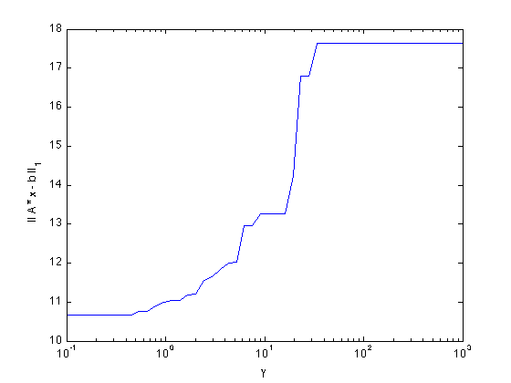
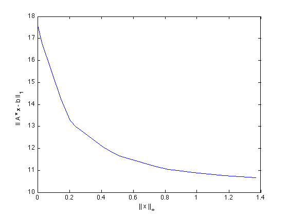

Builds a norm minimization tradeoff curve
n = 10;
A = randn(2*n,n);
b = randn(2*n,1);
gamma = logspace( -1, 3 );
nrms = zeros( size( gamma ) );
xnrms = zeros( size( gamma ) );
fprintf( 1, 'Gamma: ' );
for k = 1 : length( gamma ),
if k > 1 & rem( k, 10 ) == 1, fprintf( 1, '\n ' ); end
fprintf( 1, '%g ', gamma( k ) );
cvx_begin quiet
variable x(n)
minimize( norm( A * x - b, 1 ) + gamma( k ) * norm( x, Inf ) )
cvx_end
nrms( k ) = norm( A * x - b, 1 );
xnrms( k ) = norm( x, Inf );
end
fprintf( 1, 'done.\n' );
semilogx( gamma, nrms );
xlabel( '\gamma' );
ylabel( '|| A * x - b ||_1' );
figure
plot( xnrms, nrms );
xlabel( '|| x ||_{\infty}' );
ylabel( '|| A * x - b ||_1' );
Gamma: 0.1 0.120679 0.145635 0.175751 0.212095 0.255955 0.308884 0.372759 0.449843 0.542868
0.655129 0.790604 0.954095 1.1514 1.3895 1.67683 2.02359 2.44205 2.94705 3.55648
4.29193 5.17947 6.25055 7.54312 9.10298 10.9854 13.2571 15.9986 19.307 23.2995
28.1177 33.9322 40.9492 49.4171 59.6362 71.9686 86.8511 104.811 126.486 152.642
184.207 222.3 268.27 323.746 390.694 471.487 568.987 686.649 828.643 1000 done.
 